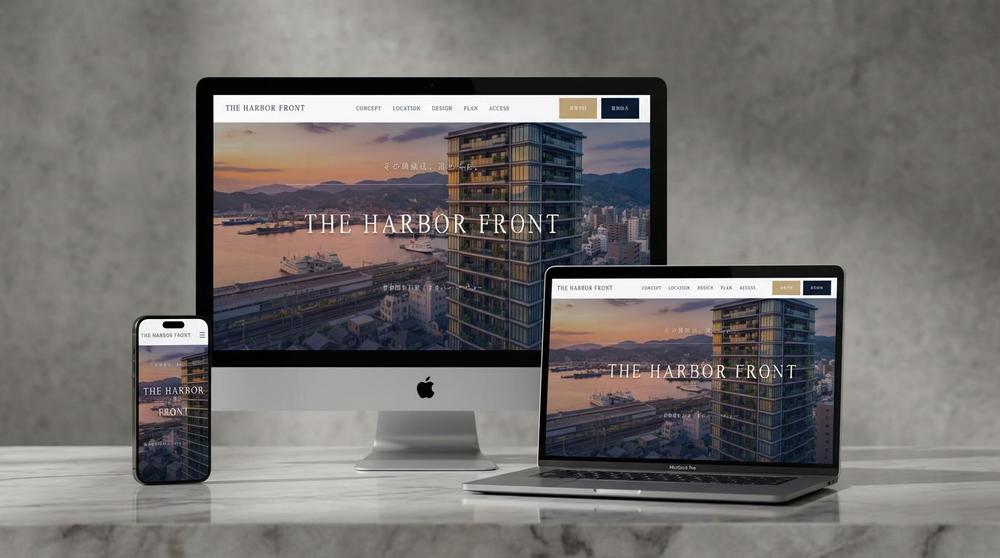
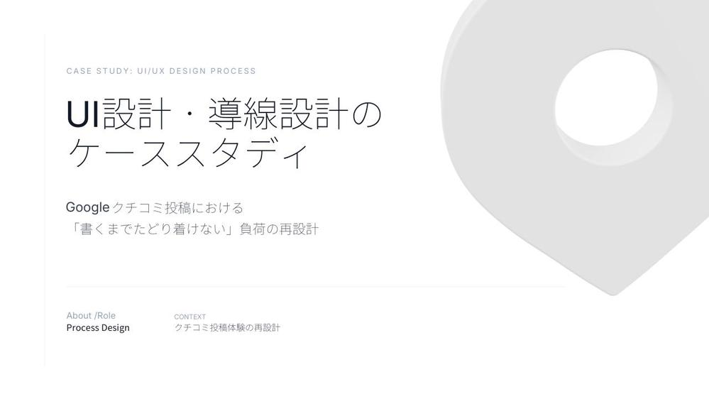
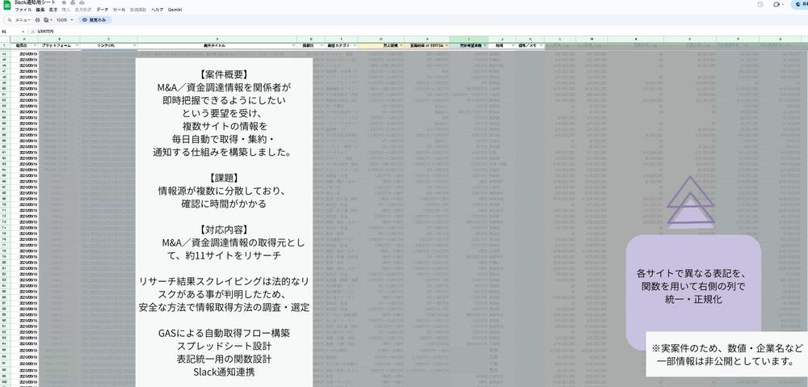
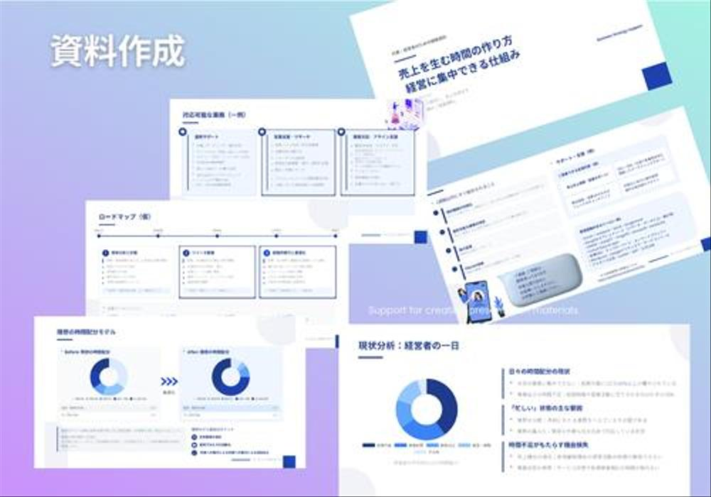
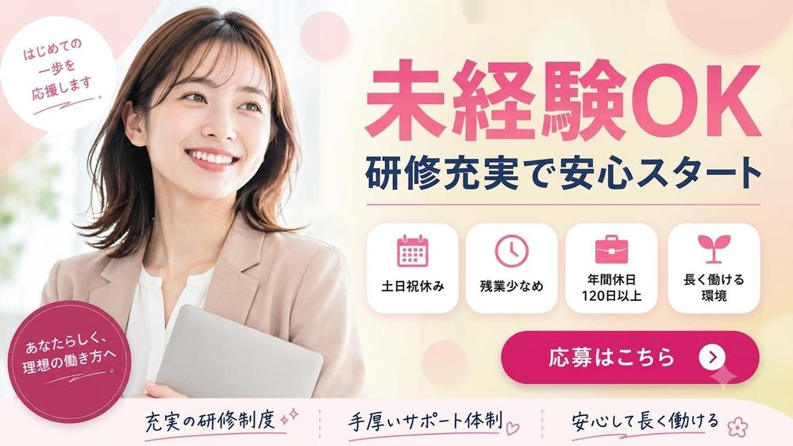
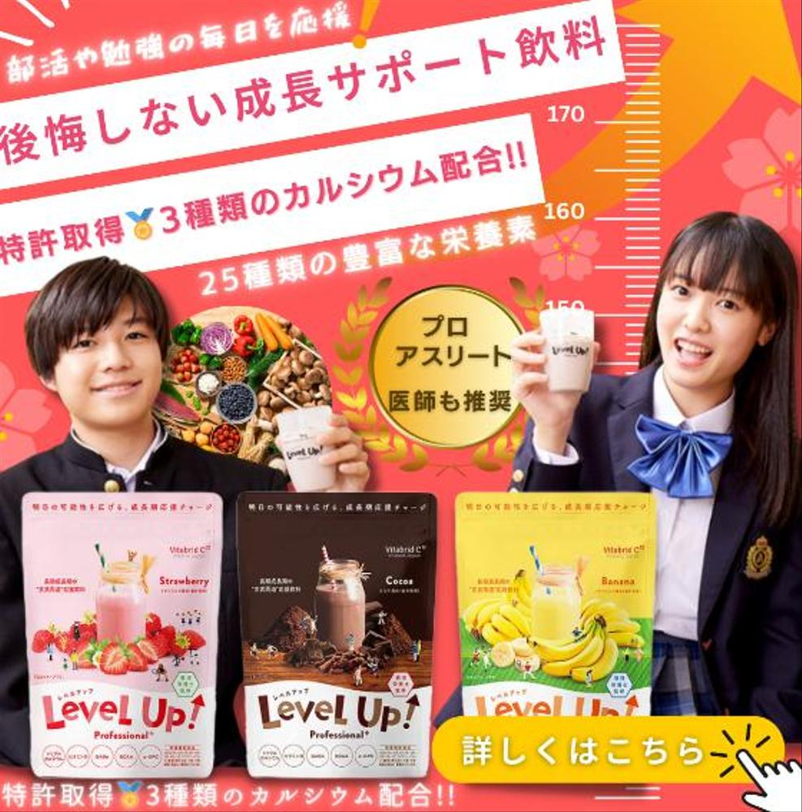
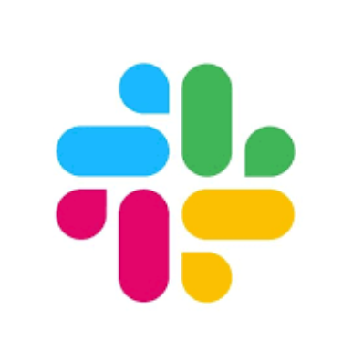

Webまわりの
「あと少し」を、
まとめてサポート。
SEO・MEO、WordPress、コンテンツ制作、リサーチ、
業務サポート、AI活用まで。
必要なところを、必要な分だけ。
考えるところから、実際に手を動かすところまで。
サポートします。
ではなく、
一緒に良くする人。
できること
01
Web / CONTENT
- WordPress更新・入稿
- SEO・MEOライティング
- 記事構成・リライト
- キーワードリサーチ
- アイキャッチ制作・リサイズ・WebP変換
- H2/H3設定 etc.
02
MARKETING / RESEARCH
- 各種リサーチ・情報収集
- SEO・MEO対策
- 競合調査・キーワードリサーチ
- データ整理・集計・レポート作成
03
SALES / SUPPORT
- 営業サポート・営業実績の集計
- データ入力・集計
- 営業リスト作成
- DM・フォーム送信管理
- SNS・LINE・メルマガ運用
04
AI / AUTOMATION
- 生成AI活用・業務効率化
- GAS・API連携
- 情報収集の自動化
- コンテンツ制作支援
WORKS
考える、つくる、整える。
Webサイト、資料、バナー、リサーチ、業務効率化など、
これまでに取り組んだ制作・サポート事例をご紹介します。

Web / DESIGN
マンションLP制作
高品質と信頼感を強調したデザインと、
ターゲットに響く情報を正確に伝える
構成設計を行いました。

UI / DESIGN
UI・導線設計

AUTOMATION / GAS
GASによる情報収集・自動化

DOCUMENT / DATA
資料作成

BANNER / CREATIVE
求人バナー制作

AD / CREATIVE
広告バナー制作
WORKS一覧を見る
その他の制作・対応事例はこちらから
ご覧いただけます。
CASE STUDY
ケーススタディ
CASE
UI・導線設計
ユーザーが迷わず目的の行動に
進める導線を設計。
CASE 01
業務効率化・自動化
複数サイトの情報を収集・整理を
自動化し、業務時間を大幅に削減
CASE 03
資料作成
多数の情報を整理し、
伝わる資料にまとめる
RESULTS
数字で見る、これまでの取り組み。
7.9位
平均検索順位
6.1%
平均CTR
約2万
月間セッション
33本以上
公開記事
10アカウント以上
SNS運用サポート
1.4万人規模
SNSアカウント運用経験
※これらは一部の実績を抜粋した例です。
ABOUT
Web Partner
Web・マーケティングを中心に、
調べる・考える・つくる・整えるまで、
幅広い業務をサポートしています。
Web担当者を置くほどではないけれど、
社内だけでは手が回らない。
そんな業務を、必要なところから
丁寧にお手伝いします。
美容師としての現場対応、ロジスティクス・生命保険での事務職を経て、ブランド商品の輸入ECサイト運営を経験する中で、有形・無形を問わず、商品やサービスが選ばれ、届けられるまでの仕組みに興味を持つ。 現在は、マーケティング支援、営業サポート、コンテンツ・クリエイティブ制作、リサーチ、事務処理など、業務がスムーズに進むためのサポートを行っています。
TOOLS
目的に応じて最適なツールを選択します。
Business / Web
Google Workspace / WordPress / Canva
Google Analytics / Search Console
Google AdSense / 各種ASP / SNS / イルシル
Generative AI
ChatGPT / Claude / Gemini / Perplexity
NotebookLM / Google AI Studio
GenSpark / Manus / v0 など
用途に応じてツールを使い分け、
新しいツールにも柔軟に対応します。
WORK ENVRIONMENT
オンラインでも安定して業務に
取り組める環境を整えています。
- ノートPC・外部モニター
- メモリ16GB
- Webカメラ
- ヘッドセット
- セキュリティソフト導入済み
QUALIFICATION
- 全国電卓実務検定 1級
- 全国商業簿記検定 2級
- ファッションコーディネート色彩能力検定 2級
- 美容師免許
FAQ
よくあるご質問
まずは「こんなこと頼める？？」から。
Web開発、マーケティング、リサーチ、資料作成、
業務効率化など、具体的に何から手をつけて良いか
わからない段階でもお気軽にご相談ください。
ご希望のツールで柔軟に対応します。

Slack